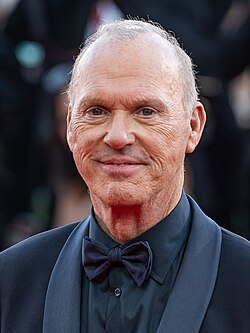
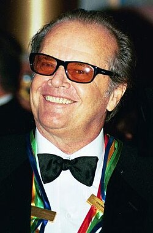

 Michael John Douglas (born September 5, 1951)Known professionally as Michael Keaton, is an American actor. He has received numerous accolades, including a Primetime Emmy Award and two Golden Globe Awards, in addition to nominations for an Academy Award and a BAFTA Award. In 2016, he was named Officer of Order of Arts and Letters in France.
 John Joseph Nicholson (bornApril 22, 1937) Is an American retired actor and filmmaker. Nicholson is widely regarded as one of the greatest actors of the 20th century, often playing rebels fighting against the social structure.Over his five-decade-long career, he received numerous accolades, including three Academy Awards, three British Academy Film Awards, six Golden Globe Awards, and a Grammy Award.